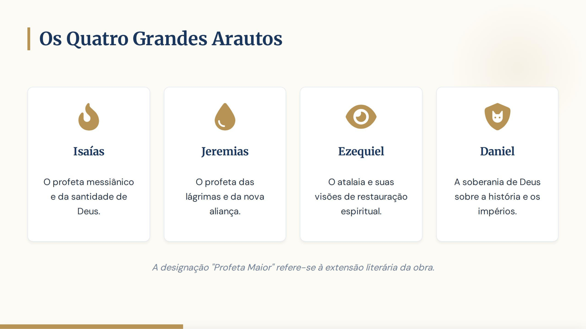
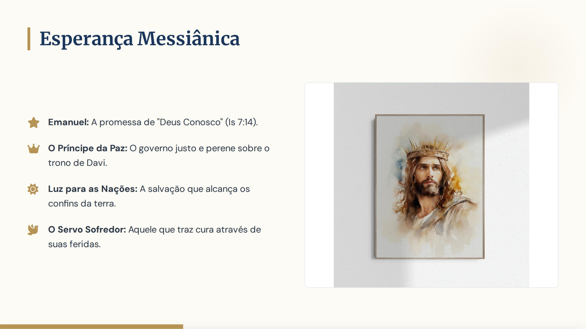
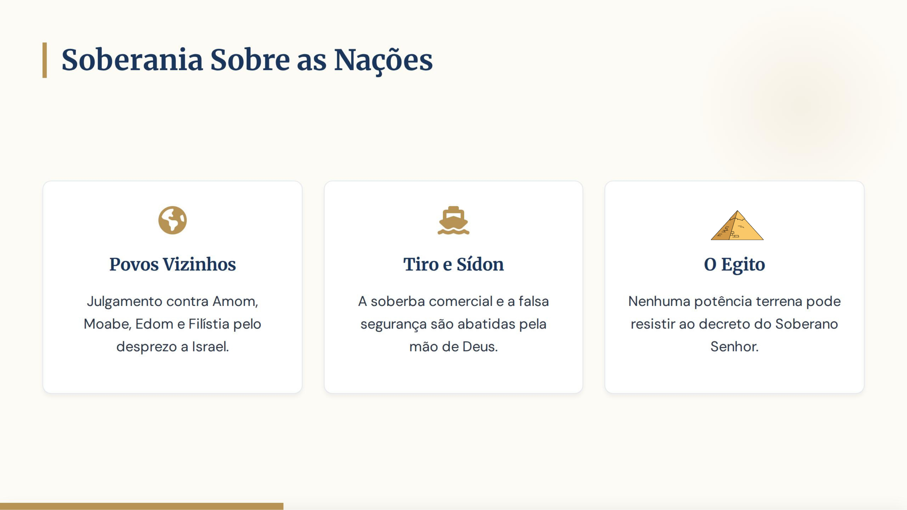
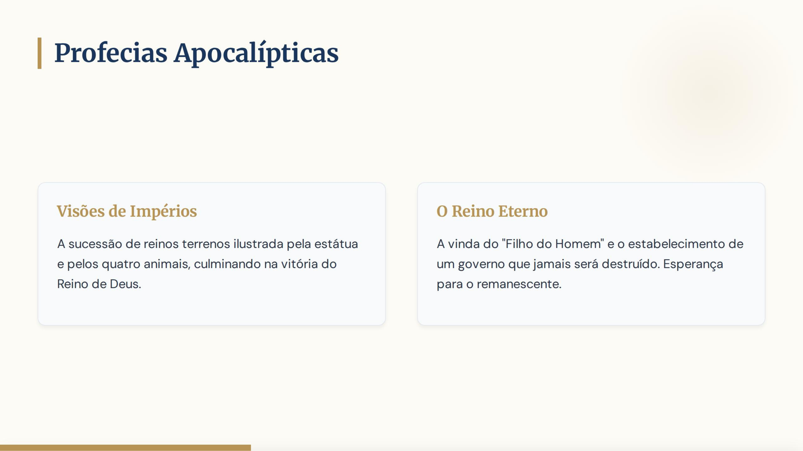

Slide 1 / 17
Início da Aula
Slide 2 / 17
Slide 3 / 17

Slide 4 / 17
Slide 5 / 17
Slide 6 / 17

Slide 7 / 17
Slide 8 / 17
Slide 9 / 17
Slide 10 / 17

Slide 11 / 17
Slide 12 / 17
Slide 13 / 17
Slide 14 / 17
Slide 15 / 17

Slide 16 / 17
Final do Conteúdo
Excelente progresso!
Agora, vamos testar seus conhecimentos com um quiz rápido de 5 perguntas.
Começar Quiz
Pergunta aqui?
Resultado do Quiz
Finalizar a Aula
Anterior
Próximo